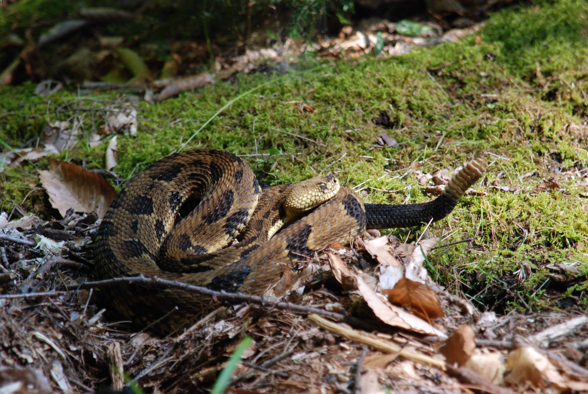

Reptiles
Five-Lined Skink (Eumeces fasciatus)
The elusive Five-Lined Skink, or Eumeces fasciatus, can only be found in small, specialized habitats. They are often found inhabiting rock slides, cliffs, areas near ledges, open woods, old buildings, and/or near water.
The Five-Lined Skink, nicknamed the “blue-tailed swift” due to their impressive speed, when young has five lengthwise stripes on a black background, and their tail is a bright blue. Adult males are dull brown all over, and when they're breeding, the males have a red throat/face. Fully grown, the Five-Lined Skink reaches 6” to 8” inches in length.
Eastern Garter Snake (Thamnophis sirtalis)
The Eastern Garter Snake, or Thamnophis sirtalis, tends to be most active during the day. They hibernate in natural cavities or burrows from late October through early April, and can occasionally be found basking on rocks for heat during the Winter.
Often found near water, the Eastern Garter Snake shelters in rodent burrows, crayfish burrows, inside stumps, or under rock piles. These snakes tend to be immune to toxic skin secretions of toads, and have excellent vision and sense of smell.
Milksnake (Lampropeltis triangulum)
The Milksnake, or Lampropeltis triangulum, typically grows to be around 2 to 3 feet long, with the largest documented in Vermont being 43" inches. They are much more prevalent at lower elevations.
The Milksnake has reddish-brown spots outlined in black with a white "Y" on the back of their head. The Milksnake's underside is a white-and-black checkerboard pattern. Generally, Milksnakes will become darker in color with age, and they can usually be found inhabiting old fields, old buildings, stone walls, or ledges.
Eastern Ratsnake (Pantherophis alleghaniensis)
The Eastern Ratsnake, or Pantherophis alleghaniensis, typically grows to be around 5 to 6 feet long, with the largest documented in Vermont being 75" inches. They have a distinct dark tone, resembling a checkerboard.
The Eastern Ratsnake is typically found in and around old buildings, old fields, and edges near rocky areas and ledges. All sightings of the Eastern Ratsnake should be reported, because it is at high risk due to very restricted range and few populations throughout the state of Vermont.
Timber Rattlesnake (Crotalus horridus)
The Timber Rattlesnake, or Crotalus horridus, were designated endangered in 1987. They have a triangular shaped head to accommodate venom glands and injecting apparatus.
Timber Rattlesnakes are a "K" selected species, which is characterized by a long life span of 20-25 years, or 35 years in captivity, late maturation, low reproductive output, and slow turnover in population. In Vermont, these snakes typically inhabit rock slides and ledges nearby temperate woodlands.
Ribbonsnake (Thamnophis sauritus)

The Easten Ribbonsnake, or Thamnophis sauritus, is very similar color-wise to the Eastern Garter Snake, however can be easily distinguished by its extremely slender appearance.
The Ribbonsnake has three yellow, length-wise stripes on a black background. A checkerboard pattern is rarely visible between the stripes. The head is dark reddish-brown over a white upper lip and there is a vertical white bar just in front of the eye. The shiny white upper lip of an Eastern Ribbonsnake can be seen from quite a distance. Also look for the mahogany stripe along the lower sides and edges of the belly. They may be found inhabiting pastures, open woods, and rocky areas. They are almost always near water, and they seem to prefer warm climates.
Eastern Spiny Softshell Turtle (Apalone spinifera)
The Eastern Spiny Softshell Turtle, or Apalone spinifera, is beyond capable of living for more than 50 years and females can grow to upwards of 25lbs.
The Eastern Spiny Softshell is a medium to large sized turtle, and easily distinguished from other turtles found in Vermont by their prominantly pointed snout, and leathery shell. Adults are typically found in the littoral zone, marshes, and tributary streams to Lake Champlain. Softshells come out of the water to bask in the sun, often for hours at a time. They will bask on fallen trees with underwater limbs, sandbars, mudflats, rocks, and floating debris.
Wood Turtle (Clemmys insculpta)
The Wood Turtle, or Clemmys insculpta, is a moderately sized turtle with a maximum shell-length of around 7" to 8" inches, with reddish-orange skin on portions of its neck and legs, and a roughly textured shell.
Adult wood turtles may live 60 years, but egg and hatchling survival is extremely low in Vermont. Although it regularly returns to streams throughout year, it may travel up to 1,000 feet from the stream while foraging for food in hardwood forests or meadows. During the Winter, the turtle spends its days at the bottom of streams.